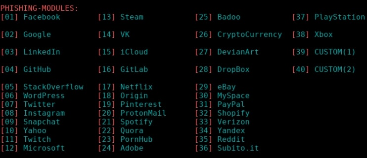

Фишинг
Общие сведенья
Фишинг - это целевая атака на опрделнного пользователя или группу людей путем создание фейковых/вредоносных страниц!Например чтобы украсть аккаунт или деанонимизировать пользователя по местоположению и ip!
Что можно сделать с помощью этой атаки?
- Украсть логин и пароль
- Загрузить вредоносный код
- Узнать ip
- Узнать ОС и параметры
- Узнать местоположение
- Встроенный Кейлогер
Пока что нет универсальных методов защиты, будьте бдительными и всегда смотрите на ссылки прежде чем перейти!
Seeker
Пытаемся деанонить
Seeker - интуитивно понятный инструмент для деанонимизации!
Установка
sudo apt install python3 python3-pip php ssh git pip3 install requests git clone https://github.com/thewhiteh4t/seeker cd seeker/ python3 ./seeker.py
Запуск
После запуска нам выдадут адрес и предлагают выбрать страницу, мы выберем телеграм и впишем все данные и вот, все готово!Показать изображение
Oтображение
Далее по выше указанной ссылке пользователь увидит страницу со всеми настройками и даже иконкой где его, чтобы перейти попросят включить местоположение, в случае отказа нам все равно прилетит айпи и примерное местоположение!Показать изображение
Защита
На каждую рыбу найдётся рыба по крупнее давайте представим что вам кидают ссылку и вам хочется наказать злоумышленника! Для этого есть инструмент AntiSeeker он может по ссылке вывести из строя инструмент, а также получить все данные с него! Установить его не составит труда!
Узнаем ip человека открывшего письмо! Для начала нам нужен будет код письма, где ссылку и текст заменяем на свои!По умолчанию почтовики Gmail, Yandex и другие не поддерживают HTML форматирование, поэтому в поле ввода текста письма введите произвольный текст, а затем нажмите правую клавишу мыши и выберите пункт меню «Просмотреть код». В появившемся окне найдите элемент c нашим текстом и выберите «Edit as HTML». В появившемся блоке замените текст на код, предварительно вставив свою ссылку, и нажмите Ctrl+Enter.Все ждём пока адресат откроет письмо!
Hidden EyE
Hidden EyE - один из лучших инструментов для создания фишинговых страниц от локалхоста до сервео, имеет более 40 шаблонов на любой вкус и цвет поддерживает создание своих страниц, добавление кейллогера отправка отчёта на почту и многое другое!
Установка
Запуск
После запуска вам нужно будет ввести "Yes, I am" и после выбирать портал где мы хотим запустить фейк страницу!Далее можно выбрать встраивать ли кейлоггер, присылать ли отчет и так далее!
